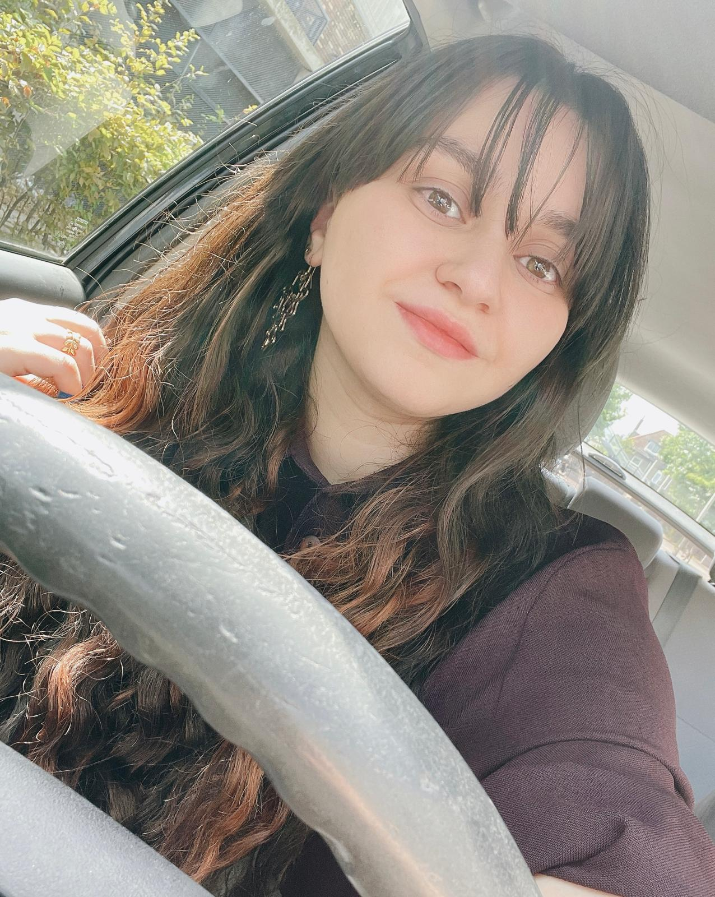
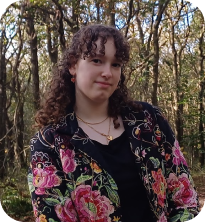
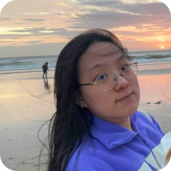
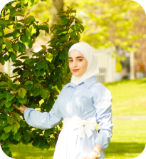

Nour
Mijn naam is Nour, ik ben 24 jaar en gezondheid speelt een belangrijke rol in mijn leven.
Na een periode van gewichtstoename ben ik bewust aan mijn gezondheid gaan werken en ben ik inmiddels 10 kilo afgevallen.
Hoewel ik mijn doel nog niet helemaal heb bereikt, werk ik er met volle toewijding aan.
Deze reis heeft me geleerd wat gezondheid echt betekent: investeren in jezelf en je toekomst.

Femke
Hey, ik ben Femke, 18 jaar oud.
Zelf ben ik erg bewust bezig met mijn gezondheid.
Wat me opvalt, is dat veel jongeren te maken hebben met onzekerheden, en dat is helemaal oké.
Toch wilde ik graag iets doen om hen te helpen.
Daarom wil ik betrouwbare en waardevolle informatie delen waar jongeren echt iets aan hebben.
Ik heb namelijk zelf ervaren dat gezonder leven en gelukkig zijn je leven zoveel beter kunnen maken!.

Chi-fei
Hoi, ik ben Chi-fei (20 jaar) en ik vind gezondheid een erg belangrijk onderwerp,
omdat het zoveel invloed op je heeft als mens en het bepaald ook hoe lang je leeft.
Ik wil vooral jongeren laten weten hoe je gezond kunt leven en
wat je kunt doen als je niet al te gezond bent.

Ruba
Ik ben Ruba, 24 jaar oud en gepassioneerd door gezondheid en persoonlijke ontwikkeling.
Het delen van de kennis en inzichten die ik uit boeken en ervaringen heb opgedaan,
vind ik ontzettend waardevol.
Mijn doel is om jongeren te inspireren en te ondersteunen bij het bereiken van een gezonder en evenwichtiger leven,
zowel fysiek als mentaal.